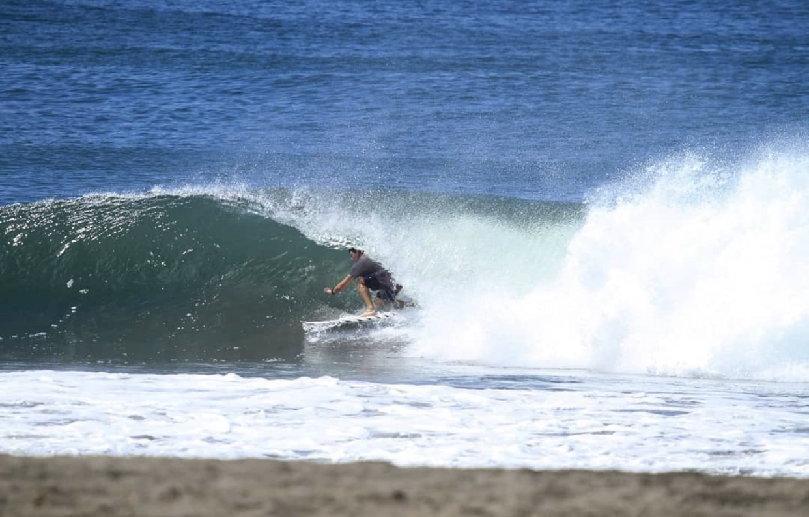
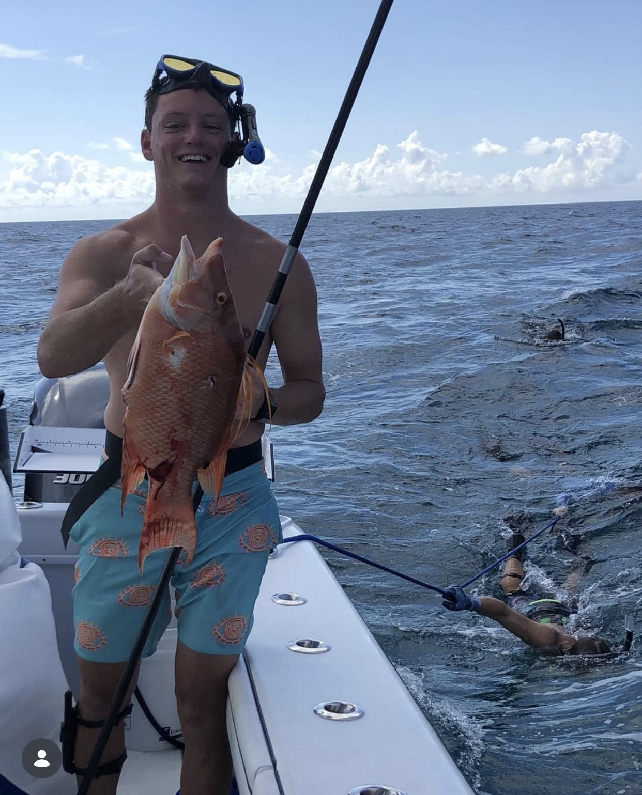
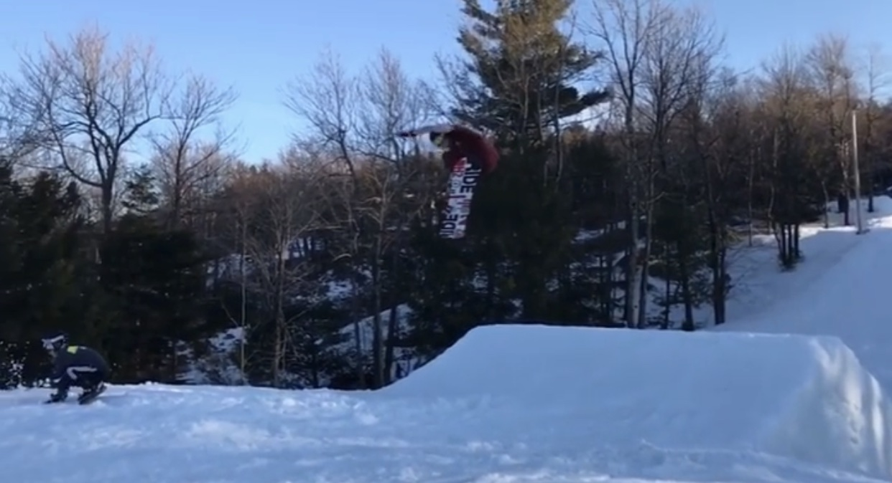
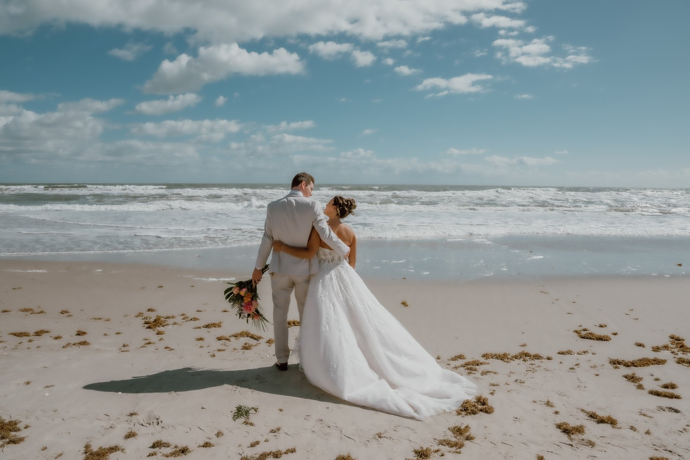
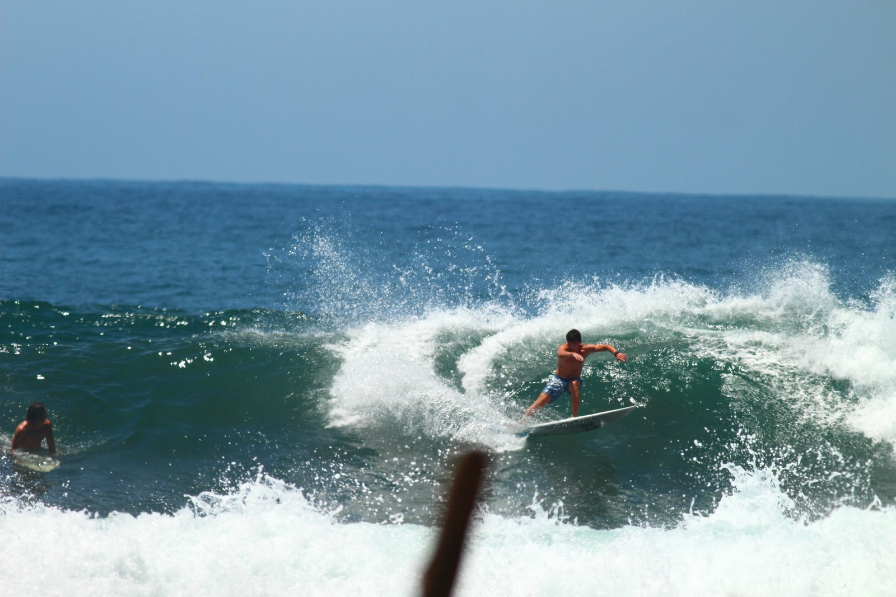
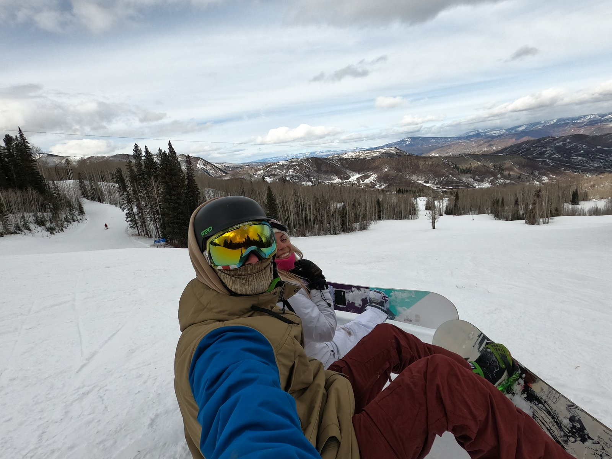

Beyond Engineering
The rest of me: a lifelong waterman and former multi-sport athlete, a husband and father of three, and a traveler who has followed waves and mountains across two continents.
Hobbies & Recreation
What I get up to away from the workbench: time in the ocean, days on the mountain, and a competitive streak that never really switched off.

Surfing
I started competing at ten and didn't really stop until grad school, riding for Florida Tech's surf team at NSSA Nationals in California. Between a demanding career and a growing family there's less time to compete now, but surfing is the constant that's followed me from a New Jersey childhood to the Florida coast; whenever the swell and the schedule line up, I paddle out.

Freediving & Spearfishing
I'm a waterman at heart, so when I'm not riding waves I'm usually under them. Freediving and spearfishing scratch the same itch surfing does: time in the ocean on its own terms, with the added reward of bringing dinner home.

Snowboarding & a Multi-Sport Upbringing
Growing up in the Northeast made me a multi-sport kid: ice hockey, lacrosse, and soccer through school, and snowboarding every winter I could get to the mountains. Adult life leaves less room for all of it, but the athlete's habits never really left me.
Rocket League -- Florida Tech Esports
In grad school I played Rocket League for Florida Tech's esports team, channeling the same competitive streak from the surf contest circuit into the arena. The clip is from a run when I was ranked top 100 in the world in Snow Day, Rocket League's hockey mode.
Family Life
These days I'm a family man first: everything else fits around the people at home.

My Crew
My wife and I have three kids: our daughter, our son, and a second daughter arriving in the summer of 2026. They take after both of us: happiest outdoors and in the water, already drawn to the same coast that shaped me.
Travel & Adventures
Surfing has been my passport, and chasing snow has filled in the rest of the map.

Chasing Waves
Surfing has taken me a long way. Domestically I've worked the entire California coast and the East Coast from Rhode Island down to Key West. Abroad, the search has led to El Salvador, Costa Rica, Nicaragua, Puerto Rico, Tortola, and Ireland.

Mountains & Snow
When I've chased snow instead of swell, it's taken me to Utah, Colorado, and Canada: the same drive to be outside, just pointed uphill.